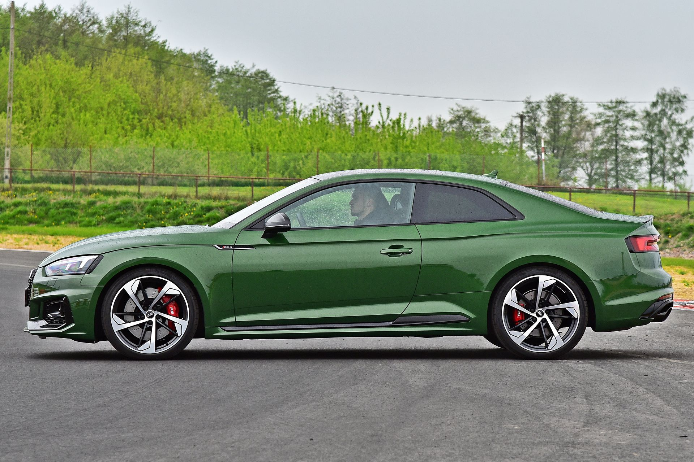
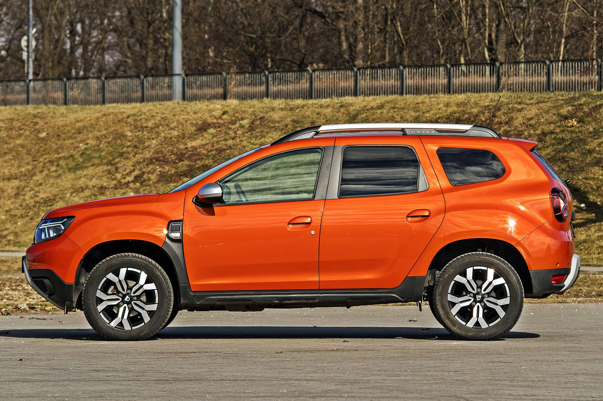
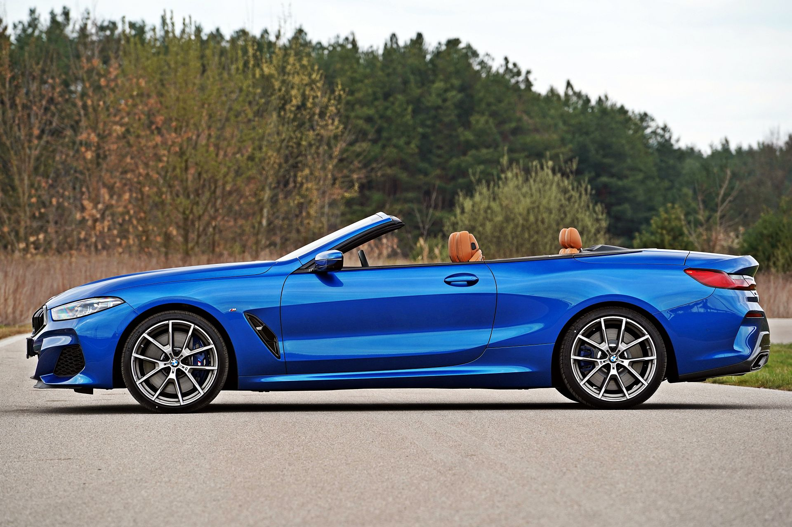
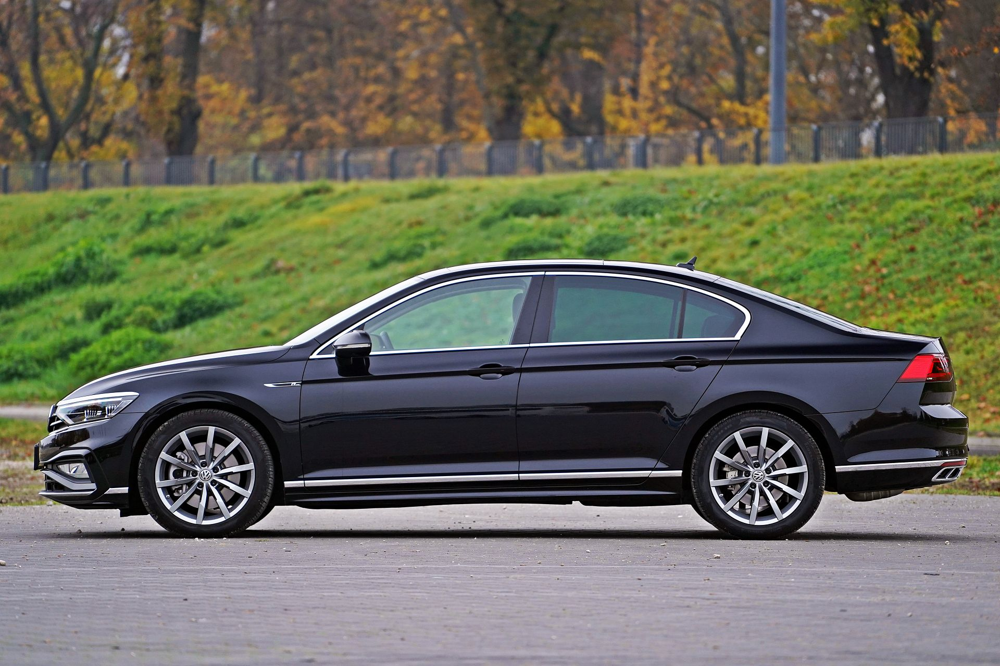
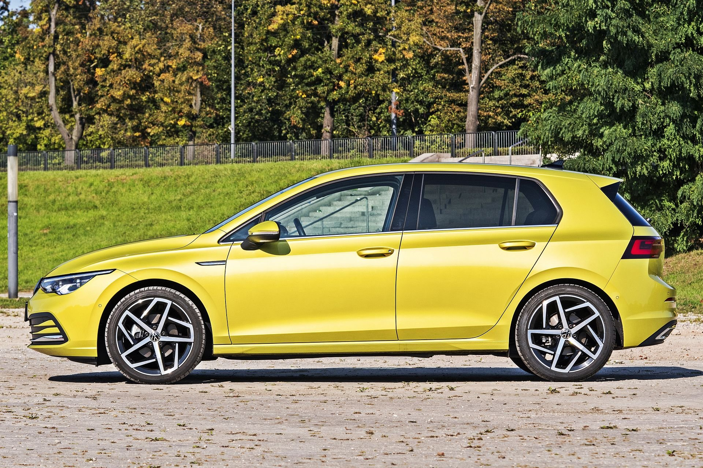

Coupe

Coupé – rodzaj nadwozia samochodowego, z dwoma, czterema lub rzadziej pięcioma miejscami siedzącymi i z jedną parą drzwi. Najczęściej jest to nadwozie dwubryłowe typu fastback. Często, ze względu na nisko opadającą ku tyłowi linię dachu w środku jest mało miejsca, zwłaszcza dla pasażerów tylnej kanapy, jeśli takowa w ogóle jest w samochodzie.
SUV

SUV – rodzaj samochodu, który łączy cechy samochodu osobowego i terenowego. SUV od klasycznego samochodu terenowego różni się m.in. mniej użytkowym charakterem i brakiem konieczności posiadania właściwości pozwalających na jazdę w terenie na rzecz bardziej komfortowo zestrojonego zawieszenia i bogatszego wyposażenia.
Kabriolet

Kabriolet – rodzaj nadwozia samochodu z odkrytą kabiną pasażerską, wyposażonego najczęściej w miękki składany dach z impregnowanego materiału.
Sedan

Sedan – rodzaj trójbryłowego, zamkniętego nadwozia samochodu osobowego, z wyraźnie oddzielonymi przedziałami: silnikowym i bagażowym. W okresie od lat 50. do 90. XX wieku był to najczęściej spotykany rodzaj nadwozi samochodowych. Nadwozie typu sedan nadal uważane jest za klasyczne i eleganckie.
Hatchback

Hatchback – rodzaj nadwozia samochodowego z dodatkowymi drzwiami z tyłu pojazdu umożliwiającymi dostęp do przestrzeni bagażowej i pasażerskiej. W hatchbackach drugi rząd siedzeń może być składany, co pozwala na łatwe zwiększenie przestrzeni bagażowej. Spotykane są zarówno 2- jak i 3-bryłowe nadwozia typu hatchback. Tylna szyba bywa elementem pokrywy bagażnika, może być razem z nią podnoszona.